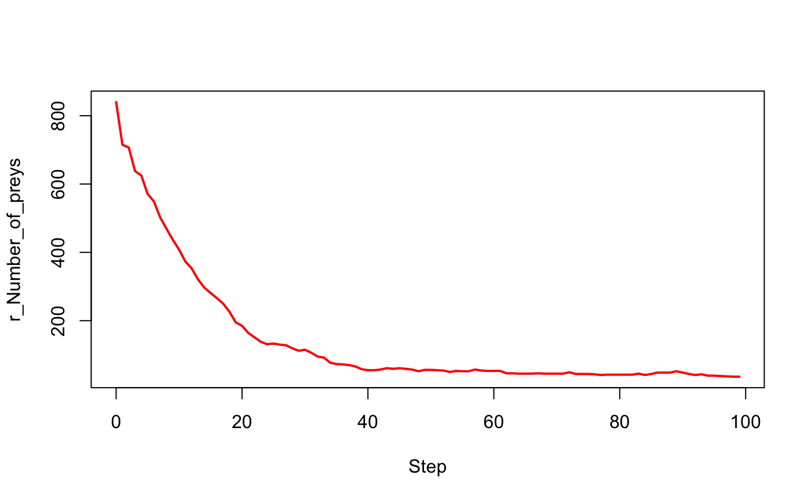

From the output of the function run_experiment with display, create
a .gif file of the output for one specific columns. One gif will be created
for each experiment (rows in the input object).
make_movie(exp, name_col, output_path = NULL, autoplay = TRUE, interval = 0.01, loop = TRUE, autobrowse = FALSE, ...)
| exp | an object of class experiment. |
|---|---|
| name_col | character string, name of the column containing the display information (format .png). |
| output_path | path to store the .gif file generated, if |
| autoplay | logical, whether to autoplay the animation when the HTML page is loaded (default to be TRUE). |
| interval | a positive number to set the time interval of the animation (unit in seconds); default to be 0.01. |
| loop | logical or numeric, Number of times the GIF animation is to cycle; default TRUE (infinite loop) |
| autobrowse | logical: whether auto-browse the animation page immediately after it is created?; default to be FALSE |
| ... | arguments in tag = value form, or a list of tagged values. The tags usually come from the animation parameters. |
path the gif file(s) invisibly.
The function uses the package animation to generate the .gif file(s).
Please take a look at the documentation of the package and to the website
https://yihui.name/animation for more information on the usage and
the installation of this package.
The arguments autoplay, interval, loop,
autobrowse and ... are used to control the behaviour of the
animation, see ?animation::ani.options for more details..
# Load an experiment exp <- load_experiment("prey_predator", system.file("models/predator_prey/models", "predator_prey.gaml", package = "gamar"))#> Loading experiment "prey_predator" from file "predator_prey.gaml"...#>#> Periods of observation ("obsrates") are converted into integers.#>#> Final time step ("tmax") is converted into integer.#>#> Seed is converted into numeric.#>#> Parameters' types are cast according to model definition#>#> p_Initial_number_of_preys_ p_Prey_max_energy_ p_Prey_max_transfert_ #> 1 200 1 0.1 #> p_Prey_energy_consumption_ p_Initial_number_of_predators_ #> 1 0.05 20 #> p_Predator_max_energy_ p_Predator_energy_transfert_ #> 1 1 0.5 #> p_Predator_energy_consumption_ p_Prey_probability_reproduce_ #> 1 0.02 0.01 #> p_Prey_nb_max_offsprings_ p_Prey_energy_reproduce_ #> 1 5 0.5 #> p_Predator_probability_reproduce_ p_Predator_nb_max_offsprings_ #> 1 0.01 3 #> p_Predator_energy_reproduce_ #> 1 0.5obs_rates(exp)#> r_Number_of_preys r_Number_of_predators r_main_display r_info_display #> 1 1 1 1 1 #> r_Population_information #> 1 1# to set the experiment exp$p_Initial_number_of_preys_ <- 990L exp$p_Initial_number_of_predators_ <- 100L exp$p_Predator_probability_reproduce_ <- 0.1 exp$tmax <- 100L # to run the experiment out <- run_experiment(exp, hpc = 2, display = TRUE)#> if "display" equal TRUE, "save" is automatically set to TRUE.#>#> Outputs are saved to "/Users/mac/Desktop/gamar/docs/reference" by default.#>#> Outputs are saved in " /Users/mac/Desktop/gamar/docs/reference/prey_predator ".#>#> Running experiment plan...# to visualize the output with(out$output[[1]], plot(Step, `r_Number_of_preys`, type = "l", lwd = 2, col = "red"))# to make a movie path_movie <- make_movie(out, "r_main_display") # to print the result, it is necessary to have the package `magick` magick::image_read(path_movie)#> # A tibble: 100 x 7 #> format width height colorspace matte filesize density #> <chr> <int> <int> <chr> <lgl> <int> <chr> #> 1 GIF 500 500 sRGB FALSE 3597150 72x72 #> 2 GIF 500 500 sRGB FALSE 3597150 72x72 #> 3 GIF 500 500 sRGB FALSE 3597150 72x72 #> 4 GIF 500 500 sRGB FALSE 3597150 72x72 #> 5 GIF 500 500 sRGB FALSE 3597150 72x72 #> 6 GIF 500 500 sRGB FALSE 3597150 72x72 #> 7 GIF 500 500 sRGB FALSE 3597150 72x72 #> 8 GIF 500 500 sRGB FALSE 3597150 72x72 #> 9 GIF 500 500 sRGB FALSE 3597150 72x72 #> 10 GIF 500 500 sRGB FALSE 3597150 72x72 #> # … with 90 more rows